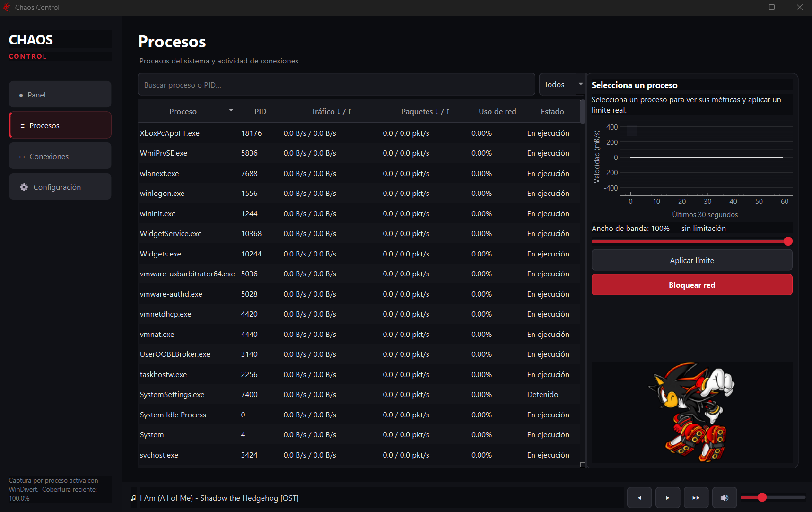
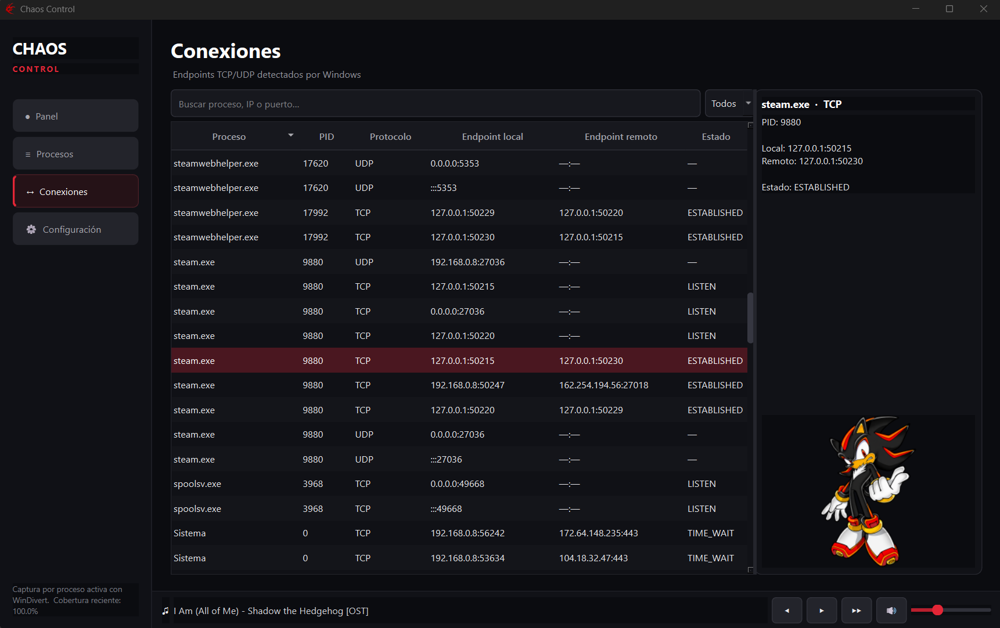
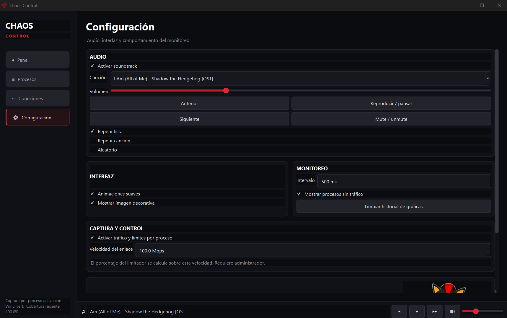

Panel y gráficas en tiempo real
Muestra descarga y subida global, paquetes por segundo y una gráfica móvil de los últimos 60 segundos. El monitoreo puede pausarse y reanudarse desde la misma vista.
Funciones verificadas
Chaos Control consulta información real de Windows y la organiza en cuatro áreas: panel, procesos, conexiones y configuración.
Núcleo del sistema
Las funciones descritas a continuación corresponden a la versión actual del programa.
Muestra descarga y subida global, paquetes por segundo y una gráfica móvil de los últimos 60 segundos. El monitoreo puede pausarse y reanudarse desde la misma vista.
Lista nombre, PID, tráfico de descarga y subida, paquetes, uso de red y estado. Incluye búsqueda, ordenamiento y filtro por actividad.
Presenta protocolo, proceso, PID, IP y puerto local, IP y puerto remoto, además del estado informado por Windows.
Al seleccionar una aplicación, el panel lateral muestra su gráfica y ofrece controles para aplicar un porcentaje de ancho de banda o bloquear su acceso a la red.
El panel calcula paquetes por segundo usando los contadores globales de la interfaz de red.
Incluye selección de cuatro pistas temáticas, reproducción, pausa, anterior, siguiente, volumen, mute, repetición y modo aleatorio.
Permite ajustar intervalo de monitoreo, procesos inactivos, elementos decorativos y preferencias de audio; varias opciones se conservan entre sesiones.
Las tablas están pensadas para explorar: puedes buscar procesos, direcciones IP o puertos; filtrar por protocolo; ordenar columnas y abrir un panel de detalle de la selección.
Control por aplicación
La tabla permite localizar un proceso por nombre o PID y revisar, en la misma vista, su tráfico de descarga y subida, paquetes, porcentaje de uso y estado.

Endpoints del sistema
La vista de Conexiones relaciona cada endpoint con su proceso y PID. Muestra el protocolo, la dirección y el puerto local, el extremo remoto y el estado informado por Windows.

Personalización integrada
Chaos Control reúne los controles de audio, reproducción, repetición, volumen e interfaz con las opciones de monitoreo y captura por proceso.
Ver cómo configurarlo